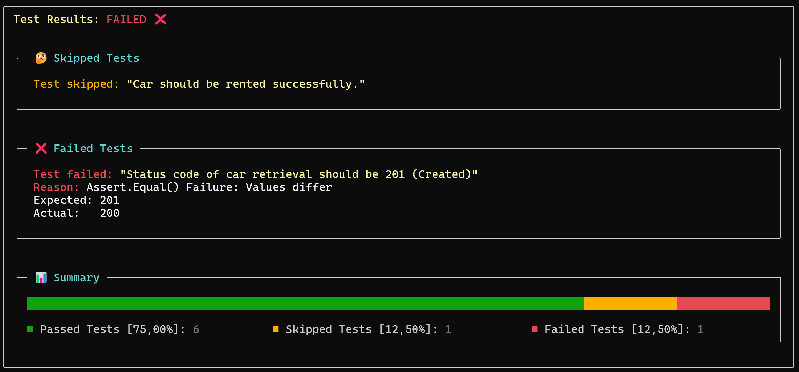

Reporting
Console report
At the end of a collection testing run, a summary report of test results is automatically displayed to console using Spectre.Console components. Here is an example:

Reporting to File
TeaPie includes a built-in JUnit XML file reporter, which can be enabled by adding the -r|--report-file option with a valid path to an .xml file where the report will be generated.
This widely accepted format is supported natively by GitHub Actions and Microsoft Azure DevOps. However, it is not fully standardized, and different CI tools may use modified versions of this format. For more details, refer to this post.
Since JUnit XML uses different terminology than TeaPie, here is the mapping:
testsuites→ Collectiontestsuite→ Test Casetestcase→ Test
Time is automatically converted to seconds (a common practice) with three decimal places, using dot notation.
Custom Reporters
The default console reporter, powered by AnsiConsole from Spectre.Console, provides all essential test results details. However, users can add custom reporters, either by defining them inline:
tp.RegisterReporter((summary) =>
{
if (summary.AllTestsPassed)
{
Console.WriteLine($"Success! All {summary.NumberOfExecutedTests} tests passed.");
}
else
{
Console.WriteLine($"Failure: {summary.PercentageOfFailedTests}% of tests failed.");
}
});
Or for more advanced and customizable reporting, by implementing a custom reporter class that implements the IReporter<TestsResultsSummary> interface:
public class MyReporter : IReporter<TestsResultsSummary>
{
public void Report(TestsResultsSummary summary)
{
// Custom reporting logic...
}
}
tp.RegisterReporter(new MyReporter());
All necessary information about results of tests can be found within TestResultSummary object. The summary contains properties with access to commonly evaluated statistics as
AllTestsPassed,NumberOfFailedTests,PercentageOfSkippedTests,FailedTests, ...